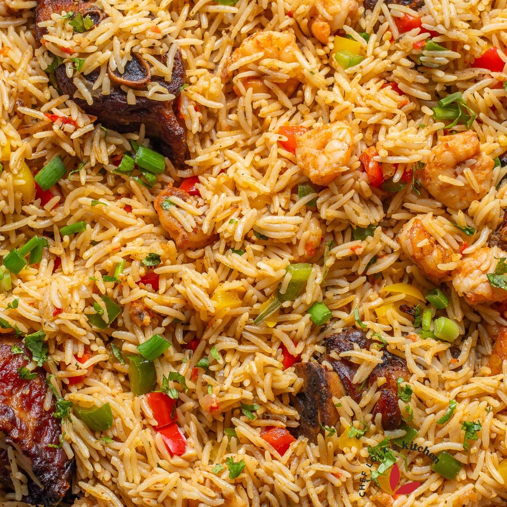
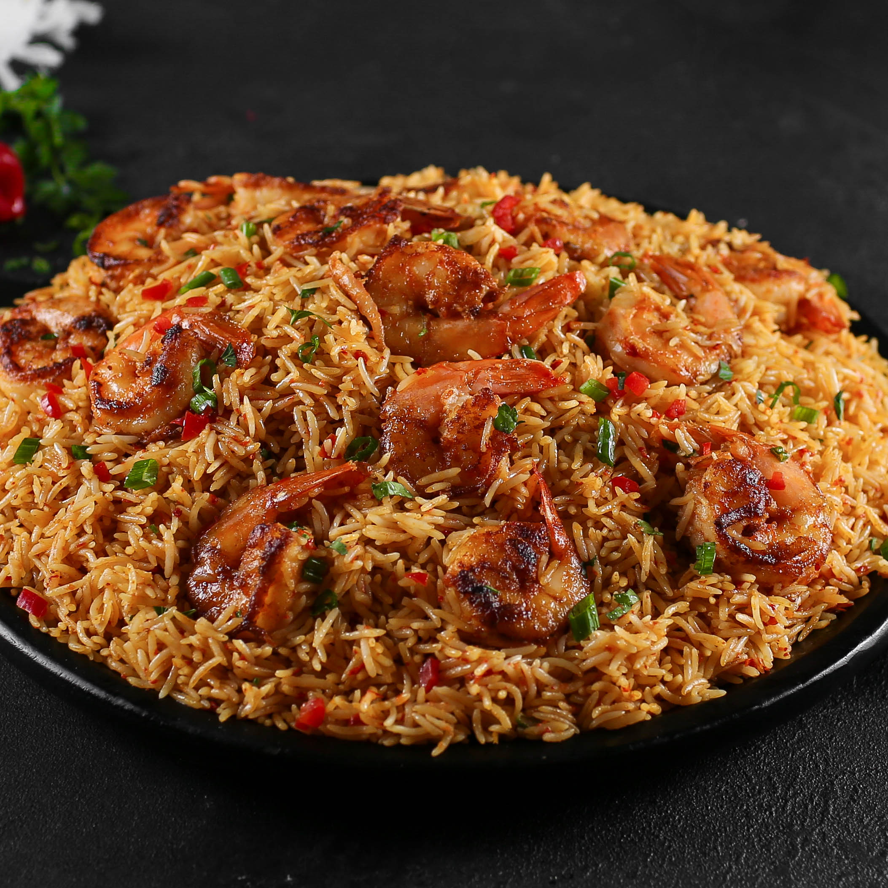

Coconut Rice

Coconut rice is a fragrant, creamy dish made by simmering rice in coconut milk, often seasoned with aromatic spices, onions, and vegetables.
Ingredients
- Rice
- Coconut milk
- Chicken or vegetable stock (or water)
- Bell pepper
- Crayfish
- Onion
- Garlic
- Coconut Oil
- Shrimps
- Habenero
- Seasonings - bouillon cubes (stock cubes), curry powder, thyme, oregano
Steps
- Prepare the Chicken/Turkey: Rinse thoroughly and season with onion, scotch bonnet, ginger, garlic, thyme, curry powder, bouillon, salt, and bay leaf. Cook with water until tender, then separate the chicken from the stock. Air-fry or pan-fry the meat for a crispy finish.
- Cook the Rice: Sauté the onion in coconut oil until translucent. Add the crayfish and blended tatashe and habanero peppers. Pour in the coconut milk and the reserved chicken stock. Add the washed rice, cover, and cook on low heat until done (about 20 minutes).
- Prepare Shrimp and Bell Peppers: Season cleaned shrimp with paprika, garlic powder, onion powder, and salt. Pan-fry shrimp in coconut oil until cooked, then set aside. Stir-fry diced bell peppers until slightly tender, then combine with the fried chicken/turkey.
- Combine and Serve: Gently stir the bell pepper, chicken, and shrimp mixture into the cooked rice. Mix well and serve hot.

Home